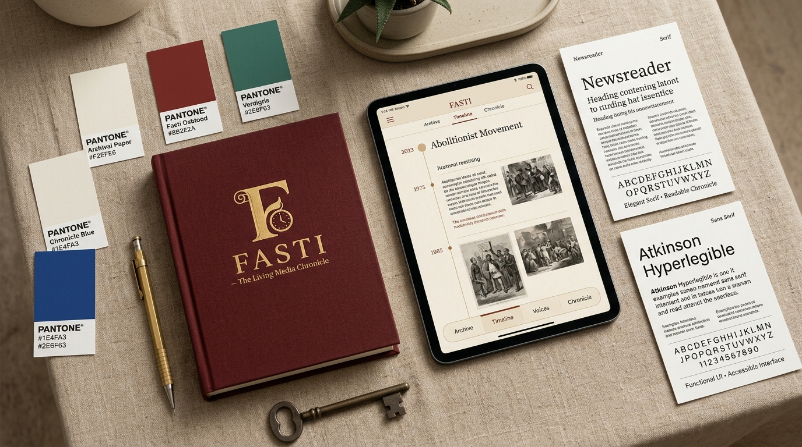
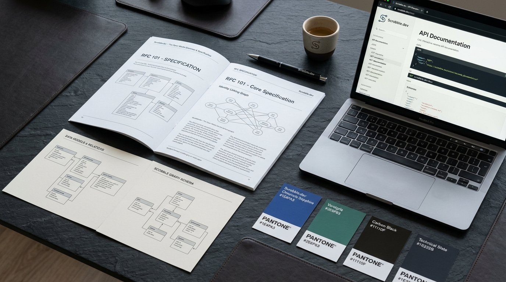
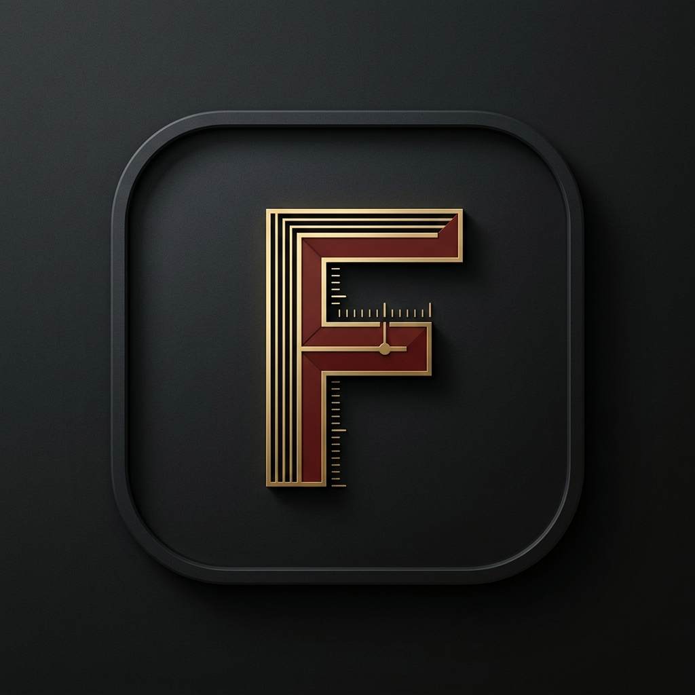

“Fasti is a book of time in which recorded events become stories.”
A dual-identity ecosystem: Scrobble.dev defines the open grammar, evidence schemas, and conformance fixtures. Fasti keeps the book, reconciling external provider claims without ever sacrificing user history.
◆ Fasti records. Players play.
Decoupled observation reception from playback. Any player or stream feeds the chronicle.
◆ No main provider identifier
Fasti record keys are immutable and local. Providers are versioned evidence and replaceable claims.
◆ Scrobble.dev defines grammar
Independent, open RFC-grade specifications, test fixtures, and crosswalk semantics.
01. Logo Marks & Identity Glyphs
Precision vector marks engineered for horological dials, mobile squircles, and high-density developer CLI terminals.
Fasti Archival Mark
fasti-mark-light.svg
Triple vertical ledger line with horological calibration ticks and Fasti Oxblood banner. Evokes an annal register, precision book spine, and chronological ledger.
Night Chronicle Mark
fasti-mark-dark.svg
High-contrast dark-mode variant engineered for OLED media rooms, home theater displays, and midnight reading.
Scrobble.dev Syntax Node
scrobble-dev-mark.svg
Technical grammar brackets framing a continuous 'S' crosswalk node. Symbolizes open standards, identity reconciliation, and developer conformance.
02. Visual Design Explorations & Materialization
AI-rendered identity mockups generated with Gemini & Imagen, showcasing the tangible brand world.

Fasti — Archival Brand & Material System
Embossed oxblood cloth journal, warm paper palette swatches, Newsreader & Atkinson typography specimen cards, and tablet chronicle UI.

Scrobble.dev — Developer Specification & Grammar
RFC specification booklet, identity crosswalk graph diagrams, interactive API documentation, and technical slate swatches.

Fasti App Icon (macOS & iOS)
Beveled matte squircle with horological gold calibration rules and oxblood ledger mark.
Scrobble.dev Technical Glyph
Code brackets and crosswalk node monogram in sapphire blue and verdigris.
03. Palette & Contrast Matrix
Archival warmth, verifiable greens, and horological oxblood. All text/surface combinations meet or exceed WCAG 2.2 AAA standards.
Base Canvas
Archival Ground
#F2EFE6Surface
Warm archival paper ground. Eliminates harsh monitor glare.
15.6:1 AAA
Paper Card
#FFFDF8Cards
Elevated timeline sheets, dialogs, and reading panels.
8.2:1 AAA
Fasti Oxblood
#8B2E2ABrand Mark
Timeline spine, recorded occurrence marks, deliberate edits.
7.6:1 AAA
Chronicle Blue
#1E4FA3Interactive
Action triggers, active links, structured evidence anchors.
Primary editorial headings and high-contrast body text.
Dark Base
Night Chronicle
#11110FDark Mode
OLED-deep base canvas for dark mode theater sessions.
04. Typographic Triad
Engineered for deep continuous reading, absolute character differentiation, and tabular timestamp alignment.
Newsreader — The Story
Serif · Editorial Titles, Dates & Chapters
“Fasti is a book of time in which recorded events become stories.”
Created by Production Type for digital longform publication. Its optical sizes (6–72pt) preserve crisp proportion and warmth across both high-density desktop displays and mobile interfaces.
Atkinson Hyperlegible — The Interface
Sans-serif · Navigation, Cards, Form Fields, Controls
Play anywhere. Keep the record. Fasti records. Players play.
Developed by the Braille Institute to maximize character distinction (e.g. 0 vs O, 1 vs l vs I) for low-vision and neurodivergent readers. Clean, high-functioning, and fatigue-free.